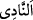
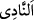
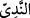
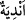

Yâni, hâlâ siz gelip birlikte olmak için erkeklere meyledecek misiniz? Ve siz o çirkin işi
yapıyorsunuz!
“Yol kesmek” iki şekilde olur. Birincisi; bununla yürümek ve yola girmek kasdedilir.
İkincisi; yoldan gelip geçenlere zarar vermek, onların mallarını gasbetmektir. Çünkü bu
da yolcuların yoldan geçmelerine mâni olur.
Âyetin mânâsı: Siz, hâlâ yolculara fuhuş ve zinâyla sarkıntılık ediyorsunuz; onlar da
yolunuzdan geçmekten vazgeçiyorlar.
Rivâyete göre, onlar genellikle yabancılara böyle davranırlardı; onları fuhuşa
zorlarlar ya da öldürmek ve mallarını soymak suretiyle yollarını keserlerdi. Böyle
yapmalarının sebebi, onların kendi memleketlerine girmelerine, meyva ve ürünlerinden
istifâde etmelerine engel olmaktı. Yahutta onlar (cinsî münâsebette) ekim mahallini
terkedip mahalli olmayan taraftan yaklaşarak neslin üreme yolunu keserlerdi.
“Ve toplantılarınızda” ve topluca sohbetlerinizde, hiç aldırış etmeden
“edepsizlikler” ve çirkin şeyler “yapacak mısınız!”
“, toplantı yerine ve insanların topluca sohbet etmelerine denir. Çünkü “ ve
“ isimleri, o yerde konuşan insanlar varsa kullanılır. Şayet insanlar kalkıp
giderlerse oraya “ denmez.
Keşfü’l-esrar’da der ki: “, insanların gece sohbet etmek ve ünsiyet kurmak için
toplandıkları yerdir. Çoğulu “ gelir.
Râğıb Isfahânî der ki: Sahih aklın çirkin ve kötü olduğuna hükmettiği, yahutta
kötülüğü konusunda tevakkuf edip de şeriatın kötülüğüne hükmettiği şeye “münker”
denir.
Burada bazı meseleler vardır: Birincisi; meclislerde açıkça cimâ etmek, livâta
yapmak ve yellenmektir. Hindlilere göre, yellenmeyi tutmak hastalık; salmak devâdır.
Bu nedenle, meclislerinde yellenmeyi tutmazlar ve yelleneni de ayıplamazlardı.
Rivâyete göre, Muâviye minberde halka hitap ederken, arkasından bir yel çıktı. Bunun
üzerine dedi ki: “Ey insanlar! Allah, bedenler yaratmış ve içlerine de rüzgarlar
koymuştur. İnsanlar, bunların çıkmaması için ne zaman kendilerine malik olabilirler?”
Orada hazır bulunan Sâsâ’a b. Savhan ayağa kalkarak: Mesele şudur ki, abdesthanede
yellenmek âdettir, kürsüde yellenmek ise bid’attır. Kendim ve sizin için Allah’tan afv ve
mağfiret dilerim” dedi.
İkincisi, elbisenin düğmelerini çözmek, ney ve benzeri çalgı aletleriyle çalgı çalmak,
yoldan gelip geçenlerle alay etmek husûsudur. Bu kıssada, edepsizliklere rızâ
göstererek insanlarla beraber yaşamak, eğlence ve haram işleyenlerle beraber olmak
gerekmez.
Cüneyd (r.h.)’a bu âyet soruldu. Şöyle dedi: Allah’ı anma (zikrullah) dışında
insanların toplandıkları herşey münkerdir, çirkindir.
İbn Abbas’tan rivâyet edildiğine göre münker, ufak çakıl taşlarıyla (yoldan gelip
geçenlere) atmak, demektir. Lût kavmi yollarda oturup yanlarındaki çanaklarda bulunan